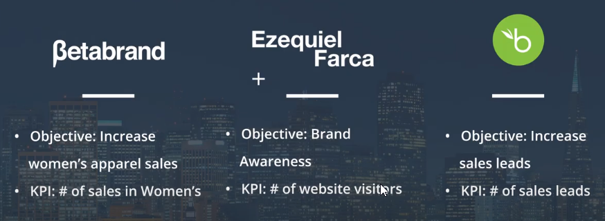
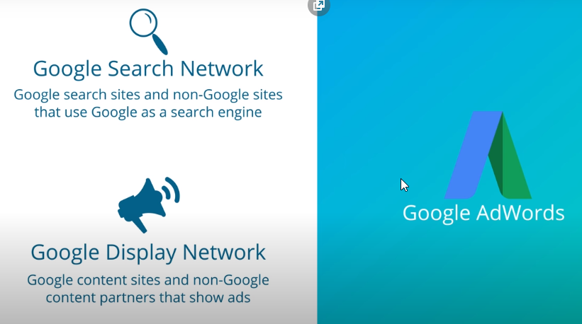
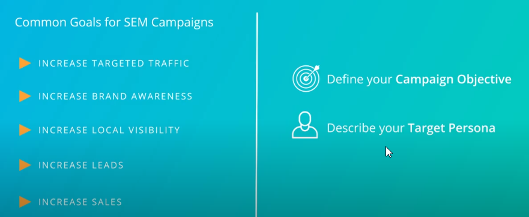
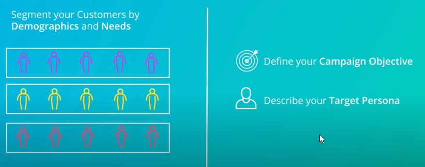
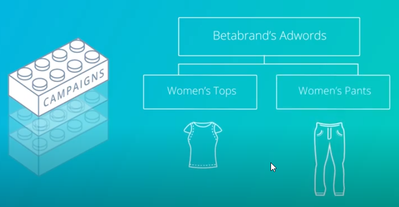
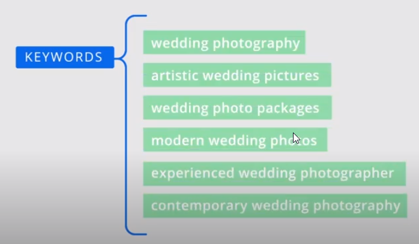
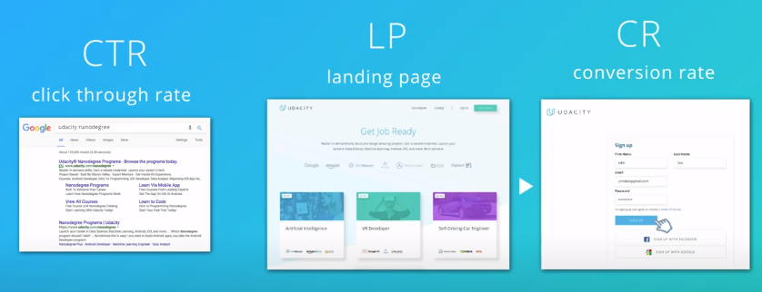
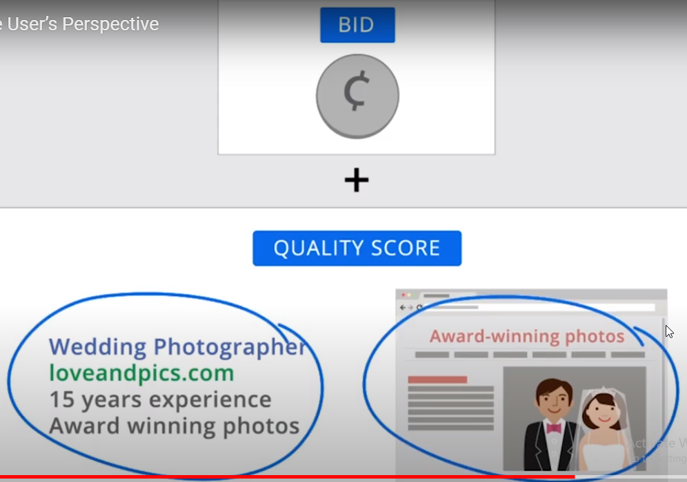

SEM-->is the process of bidding for ad placement on search results pages
Each search engine has its own search engine marketing platform

SERP-->search engine results pages
SEM-->paid advertising on search engines for top placement, Google AdWords allows you to show your ads to users who search for specific keywords in Google

AdWords-->is also used to put ads on Youtube
------------------------------------------------------------
-->An advertising campaign can only be successful if you are perfectly clear about what you want to achieve



------------------------------------------------------------------------------

-->you can set multiple campaigns in an AdWords account

-->ad groups, these are created under the campaign level and ad group contains all the text ads you want

-->in general, search ads are best used to reach people who are close to already to purchase, when you organize your ad groups in line with customer intent


keywords are assigned to each ad group

----------------------------------------------------------------------------
-->the percentage of the people that click on the ad out of all the people the ad was shown to is (click through rate)=CTR
-->the percentage of visitors to your landing page or a website that take action is called your conversion rate(CR)

-->an advertiser is charged when someone clicks ads
-->there's an auction that determines which ads appear and in which order, Two main factor determine the outcome:
1-How much an advertiser is willing to pay for click which is a bid
2-Quality score(is an estimate of how relevant and useful your ad and the page on your website it links to are to someone seeing your ad)

-->Bids and budget are different, your bids affect how much you'll spend each time someone clicks one of your ads, your budget effects how much you'll spend each day on your entire campaign which influences how often your ads are shown
impression-->when your ad appear for customer on google results
click-->when customer click ad
conversion-->if customer go to your website and buy product or service